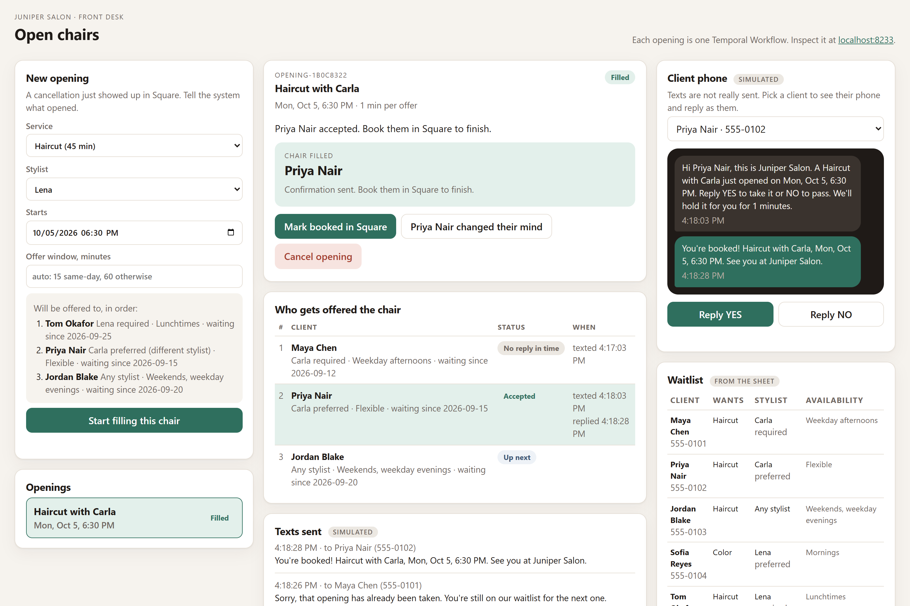
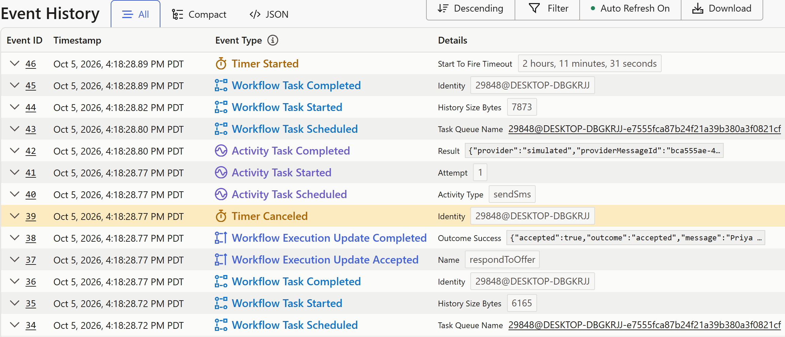

Juniper Salon · a prototype for Lena
Fewer empty chairs, and no more chasing people by text.
The prototype
Service, stylist, and time. The screen shows who will be contacted and in what order before you start.
Same service only. A “required” stylist is respected. People who asked for this stylist go first, then whoever has waited longest.
The first person gets 15 minutes for a same-day opening (60 otherwise). A live countdown shows on the dashboard.
YES: confirmation text, chair held. NO or no reply: the next person is texted, and they stay on the waitlist.
Book the accepted client as today. If they change their mind, one click withdraws them and resumes the search.

Why it cannot go wrong the way you feared
Each opening is a single process that holds exactly one offer at a time. A late YES from someone whose turn has passed is refused automatically, with a polite “sorry, already taken” text, and the person who holds the offer is unaffected.
Every offer has a countdown. When it runs out, the next person is texted without anyone noticing or remembering. The windows never run past the appointment time itself.
“Cancel opening” ends the process instantly and tells whoever held the offer. If the appointment time arrives first, it stops by itself. Nothing is ever sent for a dead opening.
Every text, reply, skip, and decision is recorded against the opening. The front desk always sees who holds the offer and who is next, and if a computer restarts the process carries on where it left off.
Underneath, the engine is Temporal: it keeps each opening’s state safe, runs the timers, delivers replies to the right process, and makes sure every step happens exactly once. On the right: Temporal’s own history of the demo run, where Maya’s timer fired, her late yes was answered, and Priya’s acceptance cancelled the countdown and sent the confirmation.

Being honest about the prototype
A practical next step
Small enough to switch off in an afternoon, real enough to learn from.